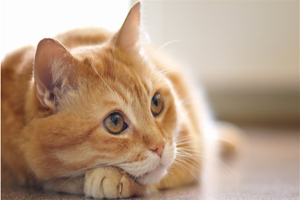

Hello, Cats!


Hello, Cats!


- 
The Fortean Cats World Times

Washington D.C. Attacked By Flying Cats
Dateline Washington D.C.
Frank Bragg reporting
The country was brought to a standstill today when flying saucers – presumably from Mars, although Venusians have also been suspected – appeared over the nation’s capital, intent on destruction. Curiously, they only attacked Pennsylvania Avenue, and have not appeared elsewhere in the country.
Bigfoot Found, Shot, Killed
Dateline Washington State
Jessica Walsh reporting
The first conclusive proof of the elusive Sasquatch was found today, when one of the ape-men was found and killed by a hunter in the north-eastern corner of the state.
The hunter plans to tour the pelt in the fall.
Nest of Alligators Found in New York Sewers
Dateline New York City
Ted Sturgis reporting
Years of rumours were confirmed yesterday when a nest of alligators were found in the sewers of New York City, just south of Times Square. The largest, which locals have dubbed “Mugsy”, measures over 21 feet long.